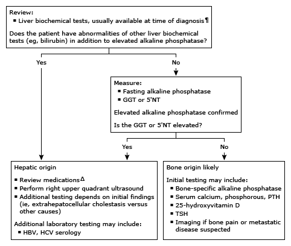

Initial evaluation of elevated alkaline phosphatase in adults*

This algorithm is intended for use with additional UpToDate content on elevated alkaline phosphatase.
GGT: gamma-glutamyl transpeptidase; 5'NT: 5'-nucleotidase; HBV: hepatitis B virus; HCV: hepatitis C virus; PTH: parathyroid hormone; TSH: thyroid-stimulating hormone; ALT: alanine aminotransferase; AST: aspartate aminotransferase.
* The normal reference range for serum alkaline phosphatase is 30 to 120 units/L. The normal reference range for alkaline phosphatase varies based on age, sex, and clinical circumstances (eg, pregnancy). Interpretation of a specific abnormal test result should be based upon the reference range reported with that result.
¶ Liver biochemical tests include ALT, AST, and bilirubin.
Δ Refer to UpToDate graphic on types of drug-induced liver injury for a list of associated drugs.